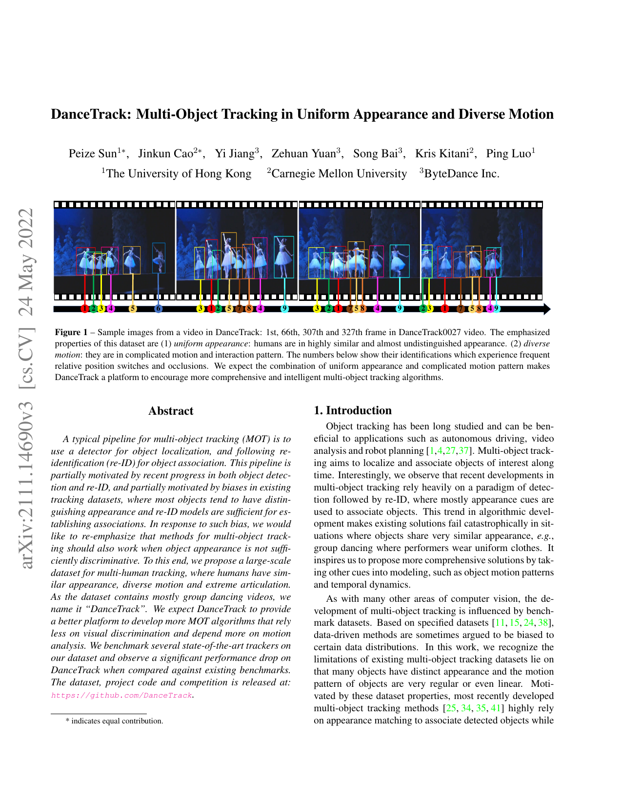
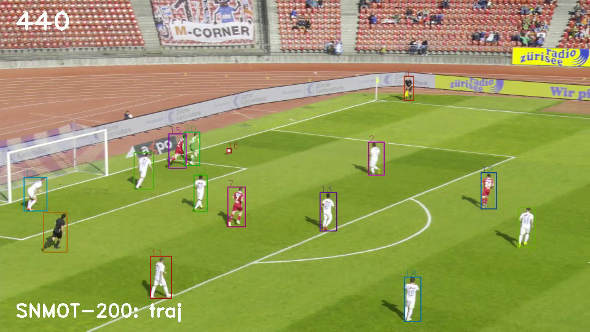

Entrega pré-banca · Junho 2026
Kanshigan
Uma pipeline de visão computacional que mede partidas de Sumô de Robôs a partir do vídeo da luta.
Autores
Eduardo Barreto · Luan Ramos · Pedro Cruz
Orientador
Rodrigo Mangoni Nicola
Instituição
Instituto de Tecnologia e Liderança
Visão computacional hoje
Rastrear pedestre em multidão é problema resolvido.
caixas · identidades · trajetórias · em tempo real
A literatura, peça por peça · alvos idênticos

DanceTrack · CVPR 2022
Dançarinos uniformizados: quando os alvos se parecem, os melhores rastreadores despencam (HOTA 63 → 48).
Dois robôs de combate são duas caixas pretas. Só o movimento distingue um do outro.

C2
Aparência uniforme entre alvos
A literatura, peça por peça · esportes reais

SportsMOT · ICCV 2023
Movimento rápido, mas um rally perde dez quadros e tudo bem. No Sumô, o round inteiro cabe em um segundo.
C3Eventos sub-segundo

SoccerNet-Tracking · 2022
Broadcast profissional, multicâmera. Nosso material é câmera de mão de espectador, em ginásio.
C4Vídeo heterogêneo
O artigo


Artigo.
Introdução, estudos relacionados, metodologia e resultados parciais: tudo que eu disse aqui está lá, com mais detalhe.
SBC · 16 pág
Artigo completo a versão que vocês receberam
IEEE · EN
Versão em inglês mantida em paralelo desde o início
ABNT
Projeto de pesquisa metodologia e cronograma detalhados
19 entradas
Diário de bordo o processo por escopo: o que falhou, por quê, e a correção